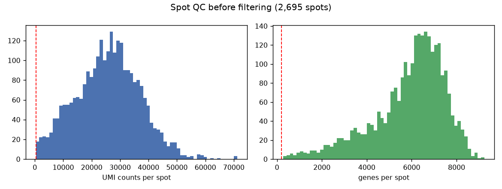
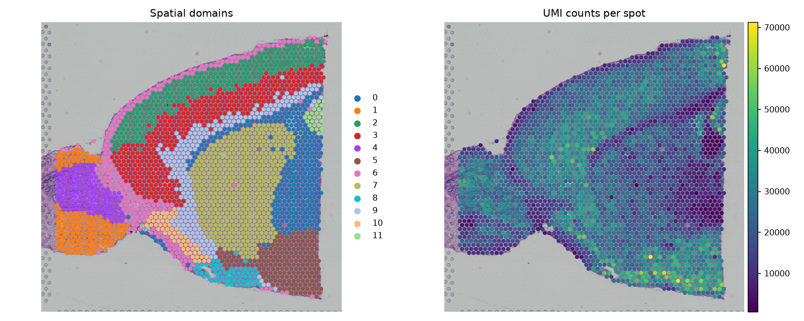
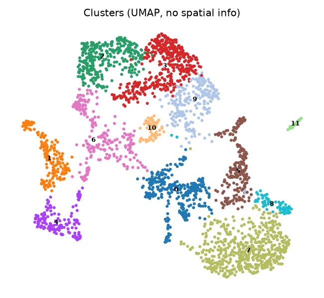
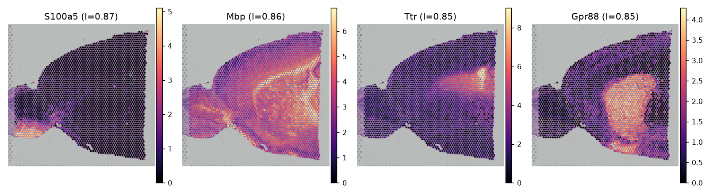
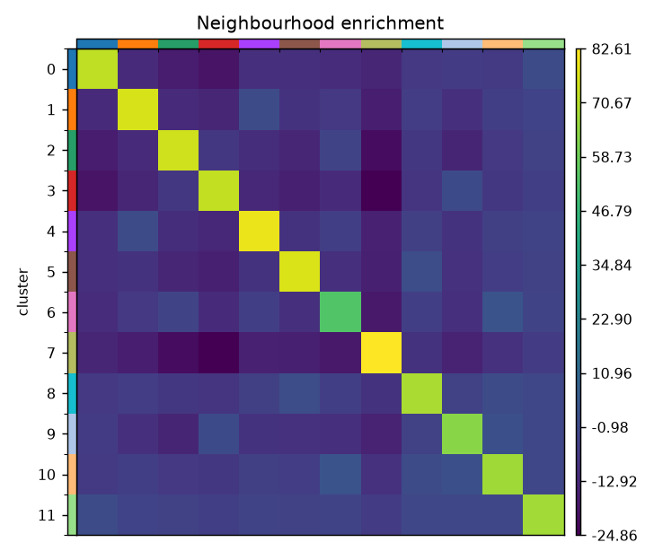

| Step | Spots |
|---|---|
| Loaded | 2695 |
| After filter (≥500 UMIs, ≥200 genes) | 2693 |

Spots below the count and gene thresholds are removed before normalisation. On a Visium section this mostly drops tissue-edge spots and off-tissue captures, not biology.


Clustering uses expression only; the left panel puts the same labels back on the section. Domains that look contiguous on tissue but overlap on the UMAP (or the reverse) are the interesting cases — that difference is the reason to run both views.

| Gene | Moran's I | p-value |
|---|---|---|
| S100a5 | 0.872 | 0.00e+00 |
| Mbp | 0.862 | 0.00e+00 |
| Ttr | 0.854 | 0.00e+00 |
| Gpr88 | 0.854 | 0.00e+00 |
Moran's I computed on the 2000 highly variable genes with a spatial neighbour graph
(100 permutations). High I means expression is spatially structured rather than
randomly scattered. Full table in results/tables/moranI.csv.

z-scores of domain-domain adjacency: positive means those domains sit next to each other more often than expected under label permutation. This is a property of the section, not of the clustering quality, so it is reported as an observation.
Visium spots with fewer than 500 UMIs or 200 detected genes were excluded. Counts were library-size normalised and log-transformed, 2000 highly variable genes were selected, and PCA (30 components) was followed by Leiden clustering (resolution 0.5) on a k-nearest-neighbour graph. Spatial structure was quantified with Moran's I on the highly variable genes (100 permutations), and domain adjacency was tested with neighbourhood enrichment on the Visium hex grid.
results/tables/moranI.csv — Moran's I for all highly variable genesresults/tables/neighbourhood_zscore.csv — domain adjacency z-scoresresults/adata_spatial.h5ad — processed object with spatial coordinatesresults/figures/ — spot QC, spatial domains, SVGs, enrichment